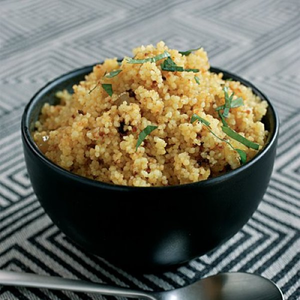
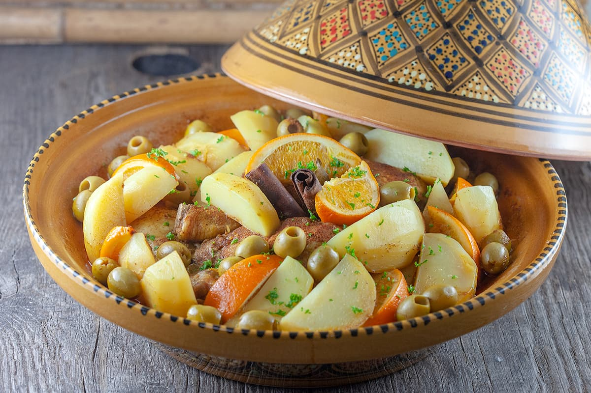
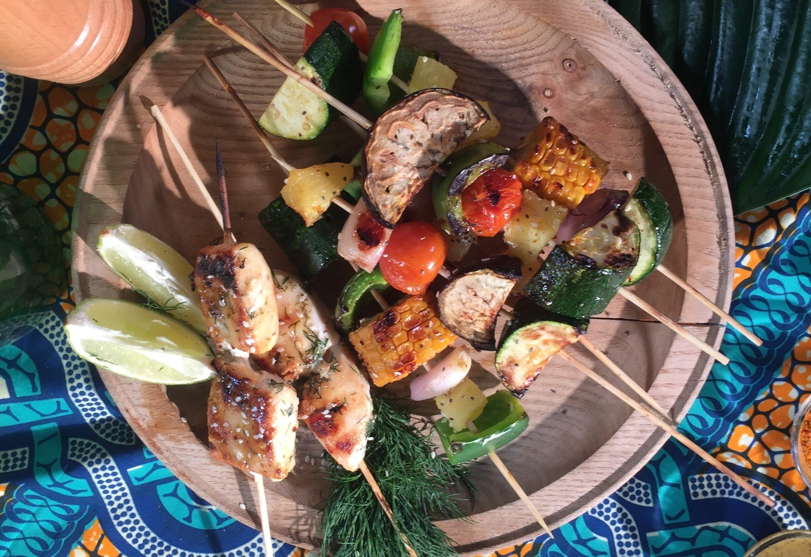
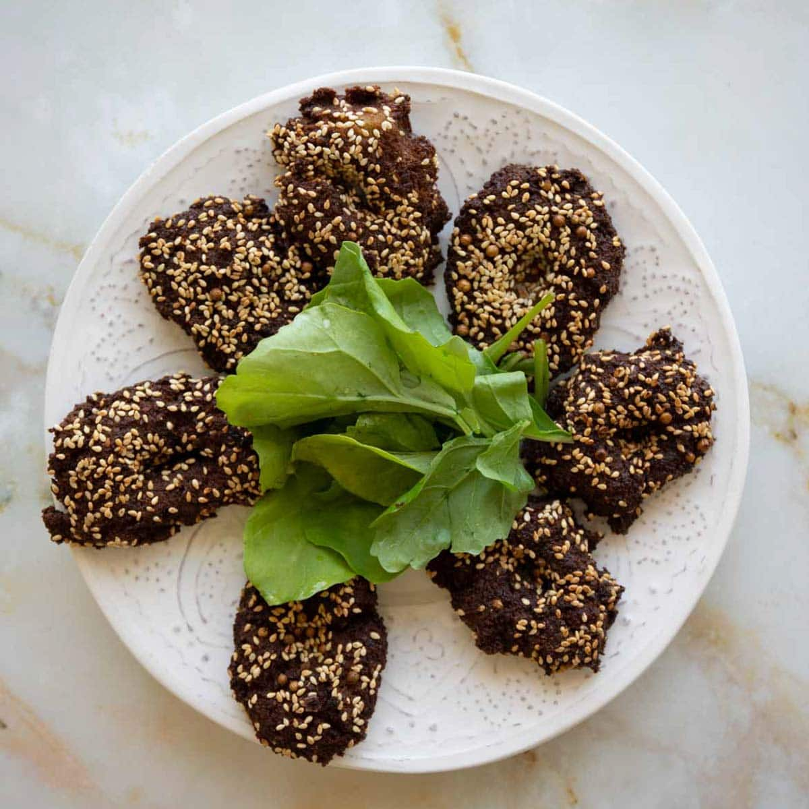
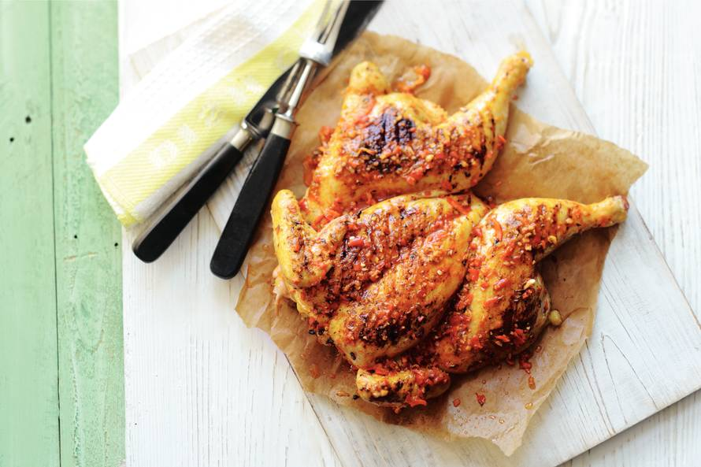

De beste gerechten van Afrika!
Couscous
Couscous is een hoofdvoedsel in veel Noord-Afrikaanse diëten, bestaande uit griesmeel dat in bloem wordt gerold tot het goed bedekt is. De tarwe wordt gestoomd en gedroogd, en heeft een lichte, luchtige textuur, met een enigszins neutrale, flauwe smaak, maar couscous staat erom bekend dat het de smaken van andere ingrediënten zeer goed opneemt. Couscous is het populairst in de Maghreb, een gebied in Noord-Afrika dat landen als Tunesië, Marokko, Algerije en Libië omvat. Hoewel de term couscous kan verwijzen naar het ingrediënt, wordt het ook gebruikt om te verwijzen naar een verscheidenheid aan couscousgerechten. Couscous kan worden geserveerd als bijgerecht of als hoofdgerecht, waarbij het vaak wordt gecombineerd met fruit, groenten of vlees, maar het wordt ook vaak gebruikt bij de bereiding van diverse salades en soepen.
- 
Tajine (Marokko)
-
Tajine, ook wel tajine genoemd, verwijst zowel naar de rijke Marokkaanse stoofpotten als naar de kookpot die wordt gebruikt om ze te bereiden. De stoofpot is rond en ondiep, van klei of keramiek, met een hoog, puntig, kegelvormig deksel. Hetzelfde deksel past in de bodem, zodat de stoom condenseert op de binnenkant en terugvalt in de stoofpot zonder verlies van smaken en vocht. De potten zijn ideaal voor langzaam garen boven sintels of op een fornuis, met als resultaat boterzachte, malse groenten en vlees dat van het bot valt.
- 
Braai
-
Braai is een Zuid-Afrikaanse term voor barbecue, en het kan zowel een zelfstandig naamwoord als een werkwoord zijn - je kunt een worstje of een biefstuk braaien, maar je kunt ook een braai organiseren met vrienden. Er is geen echte braai zonder vuur, en het wordt niet als een braai beschouwd als het vlees op een gasgrill wordt gekookt. De selectie vlees bestaat meestal uit steaks, boereworsworstjes, kebab, sosaties, en gemarineerd varkensvlees, kip, of lamskoteletjes, terwijl vis en rivierkreeftjes populairder zijn in de kustgebieden. Eenmaal klaar, wordt het vlees traditioneel vergezeld van pap of krummelpap, salades, en groenten, indien gewenst.
- 
Ta'meya (Eqypte en Israël)
-
Hoewel deze eiwitrijke kikkererwtenbeignets worden beschouwd als een van Israëls nationale gerechten, wordt vaak gesuggereerd dat falafel oorspronkelijk uit Egypte, Libanon of Palestina komt. Tegen de jaren 1950, om de kost te verdienen, begonnen Jemenitische immigranten in Israël falafel te maken op straat, en verkochten het in papier gewikkeld, wat uiteindelijk dit oude gerecht heeft getransformeerd in een vroege vorm van Israëlische fast food. Als alternatief voor de Israëlische versie, kunnen fava bonen worden gebruikt in plaats van kikkererwten, terwijl het mengsel meestal op smaak wordt gebracht met peterselie, koriander, komijn, en uien. Vandaag, zowel in Israël als in andere landen van het Midden-Oosten, worden falafel beignets meestal gegeten in pita of lafa platbrood broodjes, belegd met verse of ingemaakte groenten, en bedekt met ofwel hummus pasta, tahini dip, of een pittige, knoflook-gearomatiseerde yoghurtsaus.
- 
Peri Peri kip
-
Peri peri kip is een Mozambikaans gerecht dat bestaat uit gegrilde of geroosterde kip die vaak wordt geserveerd met een romige en pittige kokossaus. Voor het grillen wordt het vlees traditioneel gemarineerd in komijn, knoflook, paprika, citroensap en vogeloog chili's, waardoor de kip een unieke smaak krijgt.
- 